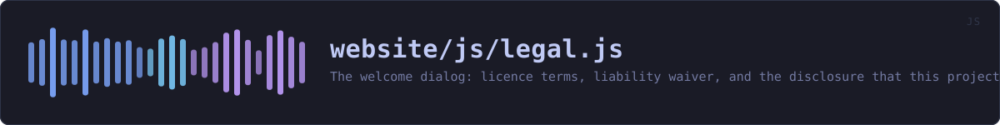

website/js/legal.js
the website's source · 192 lines · read it on GitHub
WHAT IT DOES
The welcome dialog: licence terms, liability waiver, and the disclosure that this project was built with AI assistance.
# Shown once per session, and never phoned home
Acceptance is recorded in sessionStorage, so it survives navigation between pages of this site and is gone when the tab closes. It is not a cookie, so it is never attached to a request; there is no server here to receive it and no analytics to correlate it with. That is also why there is no "remember me forever" option -- a permanent record would be more data about you than this site has any business keeping.
# Why it is a real gate and not a banner
The waiver's section 4 is the part that matters: it says plainly that this software hides who said it, not what was said. Someone who assumes the opposite could send a recording believing its contents are protected. A dismissible strip at the bottom of the page does not carry that.
The page underneath is inert while the dialog is open -- focus is trapped, and the content is hidden from assistive technology -- so the gate cannot be stepped around by tabbing past it.
IN PLAIN WORDS
This is the notice you see the first time you open the site: the licence, what this project does not promise, and the fact that it was built with AI assistance.
It remembers that you read it for as long as the tab is open, and forgets when you close it. Nothing about that is sent anywhere. There is no "remember me forever" option because keeping a permanent note about you would be more than a privacy tool's website has any business keeping.
WHAT CALLS WHAT
Read out of the source: an edge means the callee’s name appears, called, inside the caller’s body. A syntactic reading, not a resolved one.
| Function | Line |
|---|---|
accepted | 42 |
remember | 46 |
build | 50 |
show | 138 |
sync | 153 |